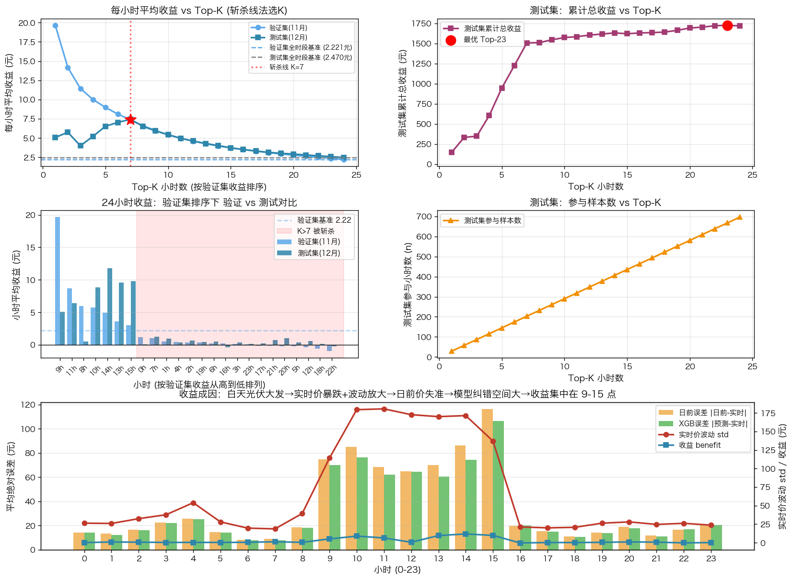
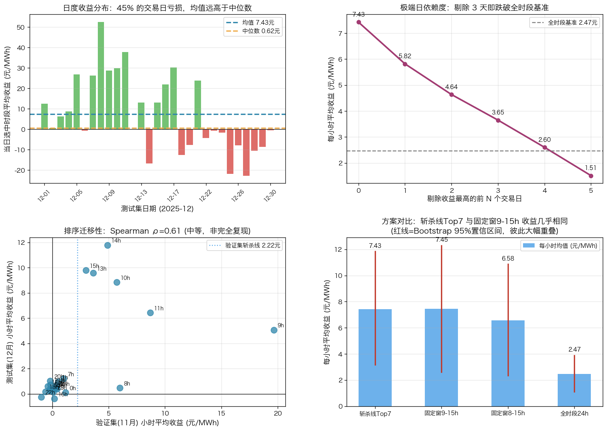

核心结论
白天价格爬坡时段（9-15h）存在由光伏引发的结构性收益机会：日前价在此频繁失准，XGB 模型有纠错空间。集中在这些时段交易，测试集（12月）效率约为全时段的 3 倍。但收益高度集中且波动大，需配合仓位与止损管理，不宜视为低风险策略。
↑ 前四项是效率上行面（少花 71% 时间拿到 88% 收益）；末项是风险下行面。两面并看才完整。
⚠️ 每小时均值 7.43 元由少数极端日拉高（日收益中位数仅 0.62 元，Top3 天贡献 56% 收益）。Bootstrap 95% 置信区间 [3.17, 11.84]，区间宽。结论稳健但收益不平滑。
一、分析方法
数据集：验证集（11月，696小时）用于时段排序和K值选择，测试集（12月，696小时）用于策略验证。
斩杀线法：
- 计算验证集全时段平均收益作为斩杀线（2.221 元/MWh）
- 将24小时按验证集收益从高到低排序
- 从高到低遍历，第一个低于斩杀线的位置即为最优K
- 只保留排序前K的时段交易
斩杀线法只是"选段工具"的一种。第四节会用稳健性检验对比它与朴素固定窗、全时段方案，看它是否真的带来额外收益。
收益定义：收益 = |日前价 - 实时价| - |XGB预测 - 实时价|（正值表示模型比日前价更优）
二、分析结果

图表解读
📈 左上图：每小时平均收益 vs Top-K
- 验证集（蓝线）：随K增大逐步下降，K=7后跌破斩杀线2.22元
- 测试集（深蓝线）：K=5-10区间形成平台（6.5-7.5元），K=7达峰7.43元
- 红色虚线K=7：验证集斩杀线恰好对应测试集峰值区 → 泛化性良好
📊 右上图：测试集累计总收益 vs Top-K
- K=7时累计1508元（用29%时长获取88%收益）
- K=24（全时段）累计1719元，但效率低（2.47元/小时）
- K=7是效率与规模的最佳平衡点
📉 左下图：24小时收益对比（按验证集排序）
- 前6个高收益小时（9,10,11,13,14,15h）：验证集和测试集均明显高于基准，是稳定的核心时段
- 第7位 8h 未复现：验证集 6.00 元/h，但测试集仅 0.48 元/h → 存在季节漂移（见第三节，12月日出推迟致 8h 光伏减少 39%）
- 验证集排序在测试集上中等程度迁移（Spearman ρ=0.61），Top7 重叠 6 个，非"完全复现"。核心 6 时段可靠，边缘时段需谨慎
🔍 底部图：收益成因分析（自然小时0-23）
- 橙柱（日前误差）：夜间 8-25 元，9-15 点飙到 65-116 元
- 绿柱（XGB误差）：白天比橙柱矮一截 → 模型在爬坡时段改进了日前价
- 红线（实时价波动std）：9-15 点从 ~25 飙到 ~180 → 光伏大发导致剧烈波动
- 蓝线（收益benefit）：在 9-11h、13-15h 抬头，但正午 12h 收益≈0 —— 光伏最强、误差最大处收益反而低（下节解释）
三、为什么收益集中在白天爬坡时段？
⚠️ 关键修正：收益并非集中在光伏最强的正午，而在两侧爬坡段
- 正午 12h 悖论：光伏最强、电价最低（153 元）、日前误差很大（65 元），但收益仅 0.6 元/h、改进率 0.9%。原因：此时日前价和 XGB 都同样失准（误差都 ~65 元），模型没有相对纠错空间。
- 收益真正来源：上午 9-11h 与下午 13-15h 的价格爬坡段，改进率 9-14%。价格在此剧烈切换，日前价滞后，XGB 抓住拐点。
- 因此"收益 = |日前误差| − |XGB误差|"衡量的是相对优势，不是误差绝对值。误差大 ≠ 收益高。
关键数据对比（测试集12月，实际光伏/负荷来自 _实际 列）：
| 时段 | 光伏出力(MW) | 实时价(元/MWh) | 价格波动(std) | 日前误差 | 改进率 | 收益 |
|---|---|---|---|---|---|---|
| 爬坡段(9-11,13-15h) | 2100-4100 | 163-314 | 144-185 | 68-116 | 6-14% | 5-12 |
| 正午谷底(12h) | ~4100 | 153 | 177 | 65 | 0.9% | 0.6 |
| 夜间(0-7,16-23h) | ~0 | 405-427 | 19-56 | 8-25 | 0-7% | -0.4-1.2 |
相关性（测试集小时级）：光伏出力 vs 实时价 r=-0.97，光伏 vs 价格波动 r=0.96，日前误差 vs 收益 r=0.89。
结论：收益源于光伏驱动的价格波动给日前价留下的纠错空间，这是电网结构性特征，具有一定可持续性。但纠错空间集中在价格切换的爬坡时段，且时段边界随季节漂移（12月日出推迟，8h 从"有效"退化为"无效"），需按季度重新校准。
四、稳健性检验
下面三问检验上述结论能否成立：收益稳不稳、排序能不能迁移、复杂方法值不值。

Q1 收益稳不稳？——高度集中，非平滑
- 每小时均值 7.43 元，但日收益中位数仅 0.62 元：均值被少数极端日拉高
- Top3 交易日贡献 56% 的总收益；剔除收益最高的 4 天，每小时均值即从 7.43 跌到 2.60，跌破全时段基准 2.47
- 45% 的交易日（13/29）实际亏损，逐时胜率 58.6%，日收益 std 高达 18.9
- Bootstrap 95% 置信区间 [3.17, 11.84] —— 优势方向可信（下界仍 > 全时段），但幅度不确定性大
Q2 排序能迁移吗？——核心时段能，边缘时段不能
- 验证集 vs 测试集小时收益 Spearman ρ=0.61（中等正相关，非"完全复现"）
- 验证集 Top7=[8,9,10,11,13,14,15]，测试集 Top7=[7,9,10,11,13,14,15]，重叠 6 个
- 分歧在边界：8h（验证选中但测试失效）与 7h（测试有效但验证漏掉），均因 12 月日出推迟、光伏时窗右移
- → 核心 6 时段（9,10,11,13,14,15h）稳定可靠；边缘时段（7h/8h）随季节变动，是校准重点
Q3 斩杀线法值吗？——与朴素固定窗几乎等效
| 方案 | K | 每小时均值 | 95% CI | 亏损日% | 累计 |
|---|---|---|---|---|---|
| 斩杀线 Top7 | 7 | 7.43 | [3.17, 11.84] | 45% | 1508 |
| 固定窗 9-15h | 7 | 7.45 | [2.61, 12.30] | 45% | 1512 |
| 固定窗 8-15h | 8 | 6.58 | [2.37, 10.86] | 45% | 1526 |
| 全时段 24h | 24 | 2.47 | [1.10, 3.89] | 41% | 1719 |
- 斩杀线 Top7（7.43）与直接固定交易 9-15h（7.45）收益几乎相同，置信区间大幅重叠 → 斩杀线法未带来可测量的额外收益
- 真正的价值在于"筛掉夜间无效时段"这个动作本身，而非具体用哪种排序算法。业务上直接采用固定窗 9-15h 即可，更简单、无需依赖验证集调参
五、实施建议
5.1 推荐策略：固定窗 9-15h（简单稳健）
交易时段：固定在 9h, 10h, 11h, 12h, 13h, 14h, 15h 交易。相比斩杀线 Top7，收益等效但无需每月用验证集重新排序，且不含季节漂移风险的 8h。
| 指标 | 固定窗 9-15h | 全时段 24h | 对比 |
|---|---|---|---|
| 每小时平均收益 | 7.45 元/MWh | 2.47 元/MWh | +201% |
| 累计收益（月度） | 1512 元 | 1719 元 | -12% |
| 参与时长 | 29.2% | 100% | 节省70.8% |
| 亏损日占比 | 45% | 41% | 略高（收益更集中） |
适用场景：资源受限（无法 24 小时监控）、追求单位时间效率。注意：因 45% 交易日亏损、收益高度集中，必须配合仓位控制与止损，不适合无风险预算的场景。
5.2 激进策略：全时段 24h
追求累计收益最大（1719 元 vs 1512 元，+14%），收益更平滑（亏损日 41%、日收益 std 仅 6.8），但单位时间效率低（2.47 元/h）。适合算力充足、追求规模且能承受全时段监控成本的场景。
5.3 仓位与止损（无论选哪种时段）
鉴于收益高度依赖少数极端日（Top3 天占 56%）、且近半数交易日亏损，建议：按 Bootstrap 下界（~3 元/h）而非均值（7.43）做保守收益预期；对单日回撤设止损阈值；对爬坡时段（9-11h、13-15h）可适度加仓，正午 12h 与夜间减仓或不做。
六、风险与限制
- 收益高度集中：Top3 交易日贡献 56% 收益，剔除最好的 4 天即跌破全时段基准。单月复现性存疑，不能按均值 7.43 做收益预期
- 近半数交易日亏损：45% 的日亏损、逐时胜率仅 58.6%，必须配合仓位与止损，不是低风险策略
- 样本期局限：仅覆盖秋冬 2 个月（11-12 月），且验证集/测试集各仅 29 天。春夏季光伏更强、时窗更宽，模式可能不同，需持续验证
- 时段边界季节漂移：12 月日出推迟已使 8h 从有效退化为无效。建议按季度重新校准交易时窗，尤其是早晚边缘时段
- 电网调度变化：若增加储能调峰或调整光伏消纳规则，中午价格崩塌可能缓解，收益基础随之改变
- 极端事件：黑天鹅事件未在历史数据体现，务必设置止损阈值
七、附录
单位说明：
- 电价单位：
元/MWh（元每兆瓦时），1 MWh = 1000度，400元/MWh = 0.4元/度 - 收益单位：
元/MWh（每交易1MWh电量的收益） - 实际收益 = 单位收益 × 交易电量（MW）
指标口径：
- 收益
benefit = |日前价 − 实时价| − |XGB预测 − 实时价|，正值表示 XGB 相对日前价的优势 - 改进率
= 1 − XGB误差 / 日前误差，消除误差基数、衡量相对纠错能力 - Bootstrap 95% CI：对逐时收益重采样 5000 次得均值分布的 2.5/97.5 分位（分布右偏，不用正态近似）
数据来源：outputs/metrics.pkl（验证集11月+测试集12月，共696×2小时）；光伏/负荷取 outputs/cleaned_data.pkl 的 _实际 列（事后归因，不参与建模）
分析脚本：analysis_daily_errors/topk_hour_selection.py（时段选择）、analysis_daily_errors/topk_robustness.py（稳健性检验）
图表文件：topk_hour_selection/topk_hour_selection.png、topk_robustness/topk_robustness.png